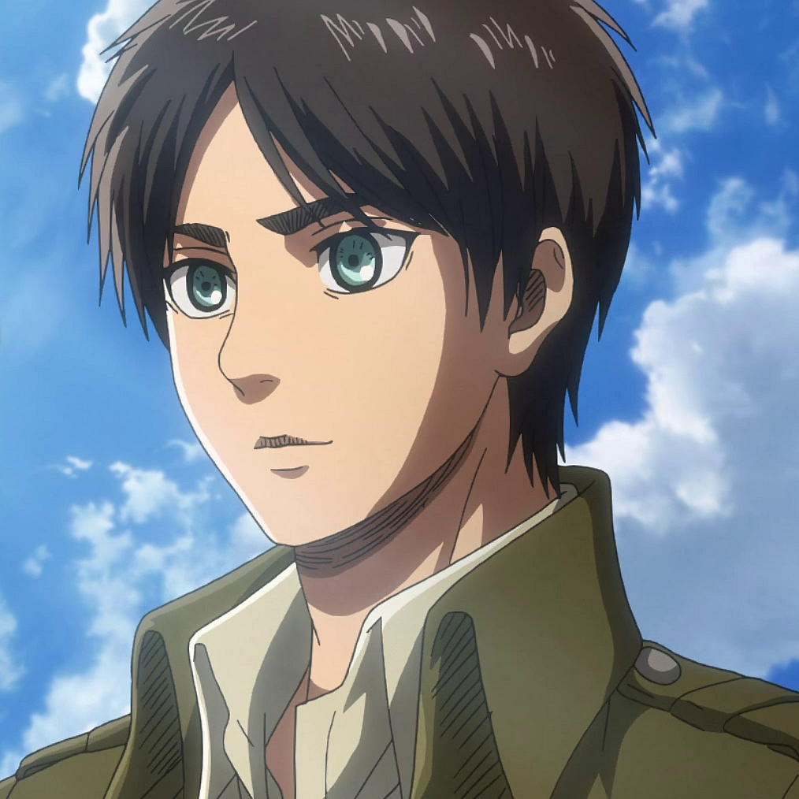
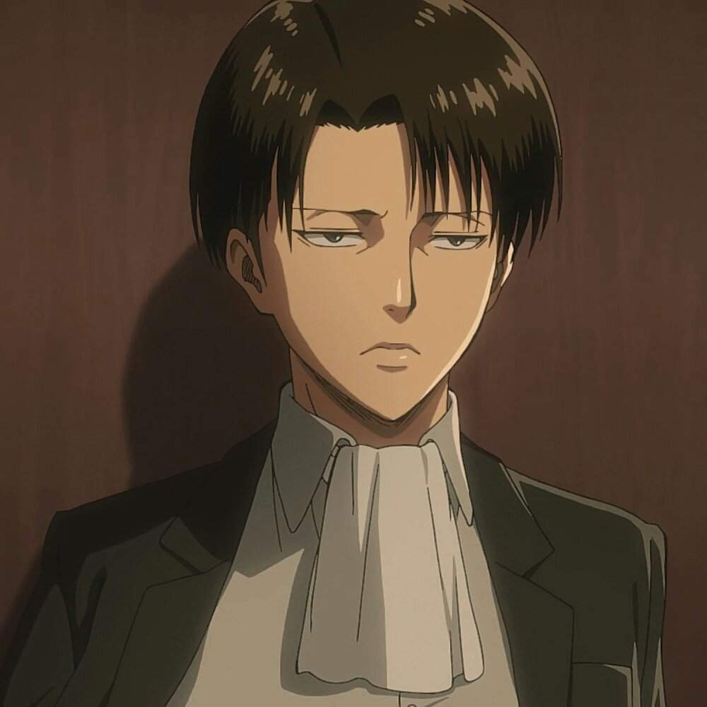

Personagens
Eren Yaeger
É o principal protagonista da história, Eren Yaeger é um ex-membro da Divisão de Reconhecimento, especializada em combater titãs. No início da história Eren morava no Distrito de Shiganshina com sua família e irmã adotiva Mikasa Ackerman. Um dia ele testemunhou um enorme titã destruir sua casa e comer sua mãe viva, fazendo assim com que ele crescesse com ódio das criaturas e jurando destruir todas elas.
Mikasa Ackerman

É a irmã adotiva de Eren, e uma das protagonistas da série. Ela foi adotada assim que seus pais biológicos foram assassinados. Mikasa também entrou no 104º Esquadrão de Recrutas e logo depois na Divisão de Reconhecimento, juntamente com Eren, que é a divisão especializada em lutar e combater os titãs, mantendo-os distantes das muralhas.
Armin Arlet

Amigo de infância de Eren e Mikasa, também ingressou no 104° Esquadrão de Recrutas e Divisão de Reconhecimento, após o ataque dos titãs. Apesar de parecer o mais fraco dentre os recrutas, Armin possui uma incrível inteligência e é um grande estrategista, o que o torna capaz de até mesmo liderar um ataque aos titãs.
Levi Ackerman
Conhecido como o soldado mais forte da humanidade, Levi é o capitão do Esquadrão de Operações especias da Tropa de Exploração. Levi já foi capaz de feitos incríveis, nunca antes vistos por nenhum soldado. Apesar da baixa estatura, é dono de uma enorme força física, o que o torna capaz de derrotar titãs sem nenhuma dificuldade e nem misericórdia. É atualmente o soldado mais habilidoso com o DMT (Dispositivo de Movimentação Tridimensional).